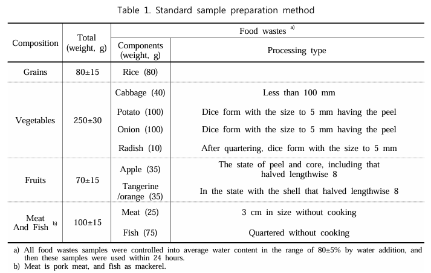
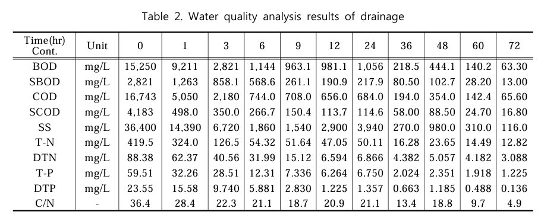
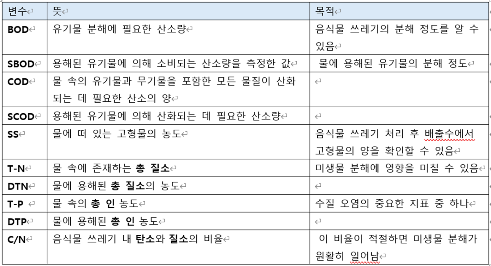
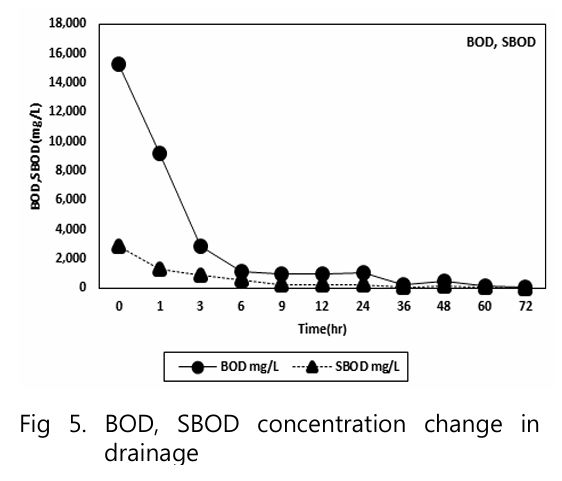
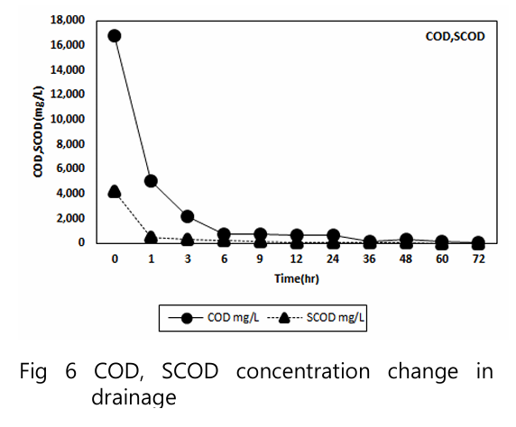
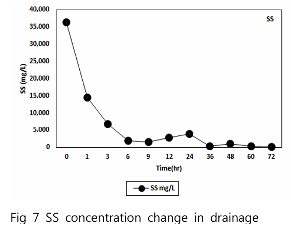
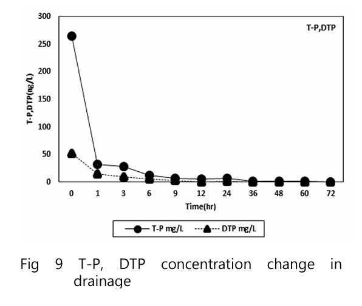
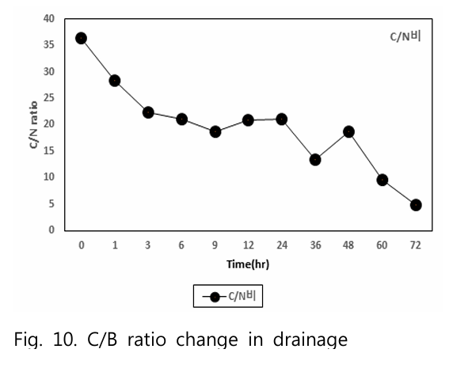
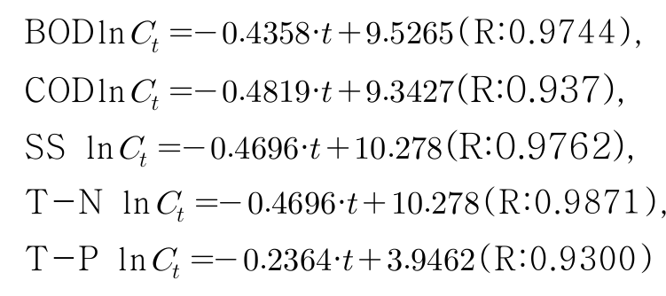

디지털트윈 오픈소스 데이터 모으기- <미생물을 이용한 가정용 음식물쓰레기 처리에 대한 실험적 고찰>
목표: 우리가 어떤 오픈소스 데이터를 모았고, 그건 왜 모았고, 그걸 앞으로 어떻게 써먹을 수 있는지에 대한 문서 작성하기.
-미생물 음식물 처리기라는 시스템을 데이터 관점에서 보면, 어떤 데이터가 주어졌을 때 어떤 예측이 가능하고 그 예측을 하기 위해 어떤 방법론을 쓸 수 있느냐를 정리하기
-실제로 미생물처리기 연구나 현장에서 쓰이는 데이터가 오픈소스로 있는지 찾아봐야함 -예를 들어 음식물 종류, 수분 함량, 유기물 조성 오픈소스를 찾고, 이를 통해 미생물 분해 속도를 연구할 수 있다. 이때 모델식이 필요한데, 이 모델식도 찾아보기.
-대규모 음식물,유기성 폐기물 처리 시스템에서 이미 쓰이고 있는 모델링이나 예측 논문을 참고하여 어떤 데이터를 가지고, 어떤 방법론을 써서 어떤걸 추정해내는 지 알아보기
최종목표: 오픈소스 데이터 → 어떻게 해석하고 → 어떤 방법론으로 연결하면 → 미생물 음식물 처리기의 상태나 성능을 예측할 수 있는가를 정리해두기
---------------------
미생물을 이용한 가정용 음식물쓰레기 처리에 대한 실험적 고찰
이 연구의 목적은 미생물을 이용하여 음식물 쓰레기 처리 방법을 조사하는 것입니다. 실험에서 사용된 처리기는 Lactobacillus 그룹의 미생물이 지배하는 PVA 캐리어를 사용하며, 음식물 혼합을 위한 교반 장치와 미생물의 보존 및 증식을 위한 물 분사 장치를 갖추고 있습니다. 물리화학적 분석을 위해 500g의 음식물을 처리기에 투입하고, 배출수는 72시간 동안 샘플링되었습니다. 유기물의 분해는 C/N 비율이 적절했던 6시간까지 빠르게 진행되었습니다. 또한 음식물의 잔존량과 분해율을 조사하기 위해 500g의 음식을 투입하고 120시간 동안 관찰한 결과, 실험 종료 시 15g이 남았으며, 분해율은 97%에 달했습니다. 나머지 3%의 음식물은 난분해성 물질로 간주되었습니다. 또한, 배출된 입자의 크기를 측정하여 하수관에 미치는 영향을 분석한 결과, 음식물 분쇄기에서 배출된 입자의 면적은 4.5배, 길이는 2.4배 더 큰 것으로 나타났습니다.
이 연구의 목적은 미생물을 이용하여 가정용 음식물 쓰레기를 효율적으로 처리하는 방법을 실험적으로 연구하고, 그 효율성과 환경적 영향을 평가하는 것. 구체적으로 미생물 기반 음식물 처리기의 효율성을 평가하고, 이 처리기가 음식물 쓰레기의 분해율을 얼마나 개선할 수 있는지 확인하며, 처리 과정에서 배출되는 입자 크기와 배출수가 하수관거에 미치는 영향을 분석
이 연구의 핵심은 미생물을 활용해 음식물 쓰레기의 유기물 분해를 최적화하고, 그로 인해 발생하는 배출물이 환경에 미치는 영향을 줄이는 것으로, 이를 통해 가정용 음식물 쓰레기 처리에 대한 새로운 해결책을 제시하려는 목적이 있습니다.
서론:
미생물이 음식물의 유기물을 분해하 면서 음식물쓰레기를 처리하는 방법은 국내외 적으로 연구가 미비한 실정-> 본 연구는 미생물을 이용하여 가정에서 발생하는 음식물쓰레기 처리 효율에 대해 실험적 고찰을 수행
2. 실험 재료 및 방법
2.1. 실험재료

본 연구에서 이용된 시료는 Table 1.과 같이 “주방용오물분쇄기의 판매･사용금지”, “[별표 음식물 찌꺼기 표준시료(Standard Sample)”를 이용하였으며 모든 음식물 은 그 크기를 5cm ×5cm 이하로 절단 하여 실험에 이용하였다.
곡물: 80g (쌀 80g)
채소: 250g (배추 40g, 감자 100g, 양파 100g, 무 10g 등)
과일: 70g (사과 35g, 귤 35g)
육류와 어류: 100g (고기 25g, 생선 75g)
음식물 샘플의 수분 함량은 평균 80±5%로 맞추어졌습니다.
2.2. 실험장치
실험에 사용된 미생물을 이용한 음식물쓰레기 처리장치의 크기는 403mm × 265mm × 245mm(가로×세로×높이)이며 중량은 약 6kg 이다. (Table 1.참조). 그리고 처리기 내 미생물 증식과 악취를 억제시키기 위해 15 분마다 1회 약 520mL의 물이 분사되고 있 으며 음식물이 잘 섞이기 위해 교반장치가 내제되어 있다.
2.3. 실험절차
본 실험을 시작하기 전 음식물처리기내 미생물을 활성화시키기 위해 5일간 매일 정시에 표준시료를 500g 투입하였다.
활성화 단계 이후 표준시료를 500g 1회 투입 한 뒤 처리기기에 발생한 배출수를 1시간, 3시간, 6시간, 9시간, 12시간, 24시간, 36시 간, 48시간, 60시간, 72시간동안 임의채수 (Grap(Point) Sampling)를 실시하여 수질 분석을 실시하였고 음식물쓰레기의 초기농 도는 표준시료 50g을 파쇄한 후 증류수를 가하여 총 100mL로 하여 실험에 이용하였 다. 이때의 실내평균온도는 26.1℃, 대기평 균온도는 20.6℃, 처리기 내 평균온도 21. 5℃, 배출수의 평균온도 20.2℃이었다.
임의채수는 정해진 시간이나 특정 지점에서 즉시 샘플을 채취하는 방법입니다. 예를 들어, 실험 중에 배출수의 변화를 추적하려면, 1시간, 3시간, 6시간, 9시간 등 정해진 시간 간격에 맞춰 샘플을 채취합니다.

- BOD (Biochemical Oxygen Demand): 생화학적 산소요구량
- 유기물 분해에 필요한 산소량을 측정한 값으로, 음식물 쓰레기의 분해 정도를 알 수 있습니다.
- SBOD (Soluble Biochemical Oxygen Demand): 용해성 생화학적 산소요구량
- 용해된 유기물에 의해 소비되는 산소량을 측정한 값으로, 물에 용해된 유기물의 분해 정도를 나타냅니다.
- COD (Chemical Oxygen Demand): 화학적 산소요구량
- 물 속의 유기물과 무기물을 포함한 모든 물질이 산화되는 데 필요한 산소의 양을 측정합니다.
- SCOD (Soluble Chemical Oxygen Demand): 용해성 화학적 산소요구량
- 용해된 유기물에 의해 산화되는 데 필요한 산소량을 측정하는 값입니다.
- SS (Suspended Solids): 부유 고형물
- 물에 떠 있는 고형물의 농도를 측정한 값입니다. 음식물 쓰레기 처리 후 배출수에서 고형물의 양을 확인할 수 있습니다.
- T-N (Total Nitrogen): 총 질소
- 물 속에 존재하는 총 질소를 나타내며, 이는 미생물 분해에 영향을 미칠 수 있습니다.
- DTN (Dissolved Total Nitrogen): 용해된 총 질소
- 물에 용해된 총 질소의 농도를 측정한 값입니다.
- T-P (Total Phosphorus): 총 인
- 물 속의 총 인 농도를 측정한 값으로, 수질 오염의 중요한 지표 중 하나입니다.
- DTP (Dissolved Total Phosphorus): 용해된 총 인
- 물에 용해된 총 인 농도를 측정한 값입니다.
- C/N (Carbon to Nitrogen Ratio): 탄소/질소 비율
- 음식물 쓰레기 내 탄소와 질소의 비율을 나타내며, 분해 속도와 관련이 있습니다. 이 비율이 적절하면 미생물 분해가 원활히 일어납니다.
음식물쓰레기 처리기의 효율성을 평가한 논문으로, 다음과 같은 오픈소스가 존재했음.
1.시료 오픈소스 데이터
본 연구에서 이용된 시료는 “주방용오물분쇄기의 판매･사용금지”, “[별표 음식물 찌꺼기 표준시료(Standard Sample)”를 이용하였으며 모든 음식물은 그 크기를 5cm ×5cm 이하로 절단 하여 실험에 이용하였음.
시료 내용은 다음과 같음
-곡물: 80g (쌀 80g)
-채소: 250g (배추 40g, 감자 100g, 양파 100g, 무 10g 등)
-과일: 70g (사과 35g, 귤 35g)
-육류와 어류: 100g (고기 25g, 생선 75g)
-음식물 샘플의 수분 함량은 평균 80±5%
총샘플 500g
이때 크기는 403mm × 265mm × 245mm였음. 부피 = 26164775
우리는 150 x 150 x 200mm로, 부피는 약 =4500000
즉 부피 약 17.2%이다. 따라서 우리는
-곡물: 13.76g
-채소: 43.00g
-과일: 12.04g
-육류와 어류: 17.20g
2. 음식물 처리 실험에서 발생한 배출수의 수질 분석 결과
이 표는 500g의 표준시료를 처리기에 넣은 후, 이 음식물이 미생물에 의해 분해되는 과정에서 배출수가 나오는데, 배출수 샘플링 (실험 중에 이 배출수를 1시간, 3시간, 6시간, 9시간, 12시간, 24시간, 36시간, 48시간, 60시간, 72시간 등의 시간 간격으로 정기적으로 채취하는 것을 의미)을 한 표이다. 배출수는 미생물에 의해 분해된 후 나온 물로 이 물의 수질을 분석하여 음식물이 얼마나 잘 분해되었는지, 미생물이 얼마나 활동했는지를 추적할 수 있다.
이 데이터를 통해 음식물의 분해 정도와 미생물의 활동을 추적하고, 실험 결과를 평가할 수 있다.

| 변수 | 초기농도 | 6시간 후 | 농도 감소율 | 72시간 후 | 농도 감소율 |
| BOD | 15,250 mg/L | 1,144mg/L | 92.5% | 63.3mg/L | 99.59% |
| SBOD | 2,821 mg/L | 568.6mg/L | 79.84% | 13mg/L | 99.54% |
| COD | 16,743 mg/L | 744 mg/L | 95.56% | 65mg/L | 99.61% |
| SCOD | 4,183 mg/L | 150.4mg/L | 93.62% | 16.8mg/L | 99.6% |
| SS | 36,400 mg/L | 1,860mg/L | 94.89% | 116 mg/L | 99.68% |
| T-N | 419.5 mg/L | 51.64mg/L | 87.05% | 12.82mg/L | 96.94% |
| DTN | 62 mg/L | 31.99mg/L | 63.50% | 3.088mg/L | 96.51%, |
| T-P | 59.51 mg/L | 12.31mg/L | 93.35% | 1.225mg/L | 97.94% |
| DTP | 23.55 mg/L | 5.881mg/L | 88.66% | 0.136mg/L | 99.42% |
| C/N | 21.1 | 4.9 |
이때 모든 항목에서 시료 투입 후 6시간까지 가장 빠르게 분해가 진행된 것을 볼 수 있었다. ( 이는 배출된 시료에서 적정 C/N 범위20 보다 더 적기 때문에 음식물 분해속도에 영향을 미친것 으로 판단된다는 추정을 함)
그래프 분석 결과 1차 속도 반응식에 따라 분해가 진행된 것을 알 수 있었음.
    
따라 수식을 다음과 같이 세웠음.

의의:
0.측정변수들을 참고할 수 있음.
1.음식물 쓰레기의 분해 정도를 BOD로 대신 측정 가능 (음식물 쓰레기에서 유기물의 분해는 미생물에 의해 일어나며, 미생물이 유기물을 분해하는 과정에서 산소를 소비함. 이때 소비되는 산소의 양을 측정하는 것이 BOD)
2. 유기물이 분해될수록 BOD 값은 낮아지며, 이는 분해 정도가 높아졌다는 의미
3. 이때 초기에 분해가 빠르게 일어나며 1차식으로 분해가 발생할 가능성이 있음.